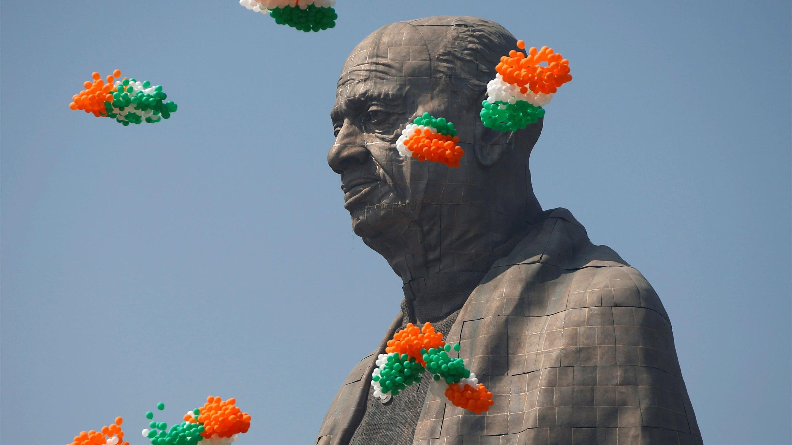

Background and Purpose: The Statue of Unity is a colossal statue of Indian statesman and independence activist Sardar Vallabhbhai Patel, who was the first Deputy Prime Minister and Home Minister of independent India. Born on October 31, 1875, in Nadiad, Gujarat, Patel played a crucial role in the country's freedom struggle and later in integrating princely states into the Indian Union after independence. The statue was commissioned by the Government of India as a tribute to Patel's contributions to nation-building and his efforts in unifying India. It stands as a symbol of unity, strength, and integrity, embodying the values that Patel stood for throughout his life.
Location: The Statue of Unity is located in the state of Gujarat, India, near the Sardar Sarovar Dam on the Narmada River. The statue stands facing the Narmada Dam, about 3.2 kilometers away, on the river island called Sadhu Bet. This strategic location offers visitors a scenic view of both the statue and the dam, highlighting the symbiotic relationship between the monument and the engineering marvel of the dam.
Design and Construction: The statue was designed by Indian sculptor Ram V. Sutar, who meticulously crafted the likeness of Sardar Patel based on historical photographs and accounts. Standing at a height of 182 meters (597 feet), the Statue of Unity surpasses the previous record holder to become the tallest statue in the world. The construction of the statue was undertaken by Larsen & Toubro (L&T) and the state-run Sardar Sarovar Narmada Nigam Ltd (SSNNL), employing advanced engineering techniques and materials to ensure its structural integrity and durability.
Inauguration: The Statue of Unity was inaugurated on October 31, 2018, the 143rd anniversary of Sardar Patel's birth, by Indian Prime Minister Narendra Modi. The inauguration ceremony was attended by numerous dignitaries and officials from India and abroad, marking a historic moment in the country's cultural and architectural landscape. The event celebrated the legacy of Sardar Patel and his role in shaping the destiny of modern India.
Features and Facilities: The statue complex offers a range of amenities and attractions for visitors, including viewing galleries at different levels that provide panoramic views of the surrounding area. At the base of the statue, there is an exhibition hall and a memorial garden showcasing artifacts, photographs, and interactive displays related to Sardar Patel's life and achievements. Tourists can also access facilities such as a museum, audio-visual gallery, and research center, providing insights into the history and significance of the statue.
Tourism and Economic Impact: Since its inauguration, the Statue of Unity has become a major tourist destination, drawing visitors from across India and around the world. The influx of tourists has had a significant economic impact on the region, boosting tourism-related businesses and generating employment opportunities for local residents. Hotels, restaurants, and souvenir shops have flourished in the vicinity of the statue, catering to the needs of travelers and contributing to the overall development of the area.
Controversies and Criticisms: Despite its popularity, the Statue of Unity has faced criticism on various fronts, including concerns about its cost and environmental impact. Some critics argue that the substantial funds allocated for the project could have been better utilized for social welfare initiatives or infrastructure development. Additionally, there have been debates about the cultural and historical significance of erecting such a monument, with some questioning the portrayal of Sardar Patel's legacy and the broader political motivations behind the statue.
Legacy and Symbolism: Regardless of the controversies, the Statue of Unity stands as a symbol of national pride and unity, representing the ideals of leadership, courage, and resilience embodied by Sardar Vallabhbhai Patel. It serves as a reminder of India's rich heritage and the sacrifices made by its founding fathers in the pursuit of freedom and equality. The statue's towering presence on the banks of the Narmada River is a testament to the enduring legacy of Patel and his vision of a united and prosperous India.
The Statue of Unity has become not only a landmark but also a pilgrimage site for millions of Indians who come to pay their respects to Sardar Patel and to experience the grandeur of this architectural marvel. Its significance extends beyond its physical dimensions, symbolizing the aspirations of a nation and the collective spirit of its people. As India continues to evolve and embrace its diverse cultural heritage, the Statue of Unity stands as a beacon of hope and inspiration for future generations, reminding them of the values of unity, integrity, and progress that define the nation's identity.
The Statue of Unity stands as a symbol of unity, strength, and the legacy of Vallabhbhai Patel, who played a crucial role in the integration of India's princely states into the Indian Union following independence in 1947. The statue, which is the tallest in the world, was inaugurated on October 31, 2018, Patel's birth anniversary. It stands at a height of 182 meters (597 feet) and is located on Sadhu Bet Island on the Narmada River in the state of Gujarat. The monument not only serves as a tribute to Patel but also as a tourist attraction, drawing visitors from across India and around the world. It showcases various aspects of Patel's life and contributions through exhibitions, museums, and galleries located at its base. The construction of the Statue of Unity has sparked debates regarding its cost, environmental impact, and the portrayal of historical figures. While some view it as a fitting tribute to a national hero and a symbol of national pride, others have raised concerns about the allocation of resources and the representation of history. Overall, the Statue of Unity stands as a monumental landmark, representing the ideals of unity, integrity, and the rich cultural heritage of India.